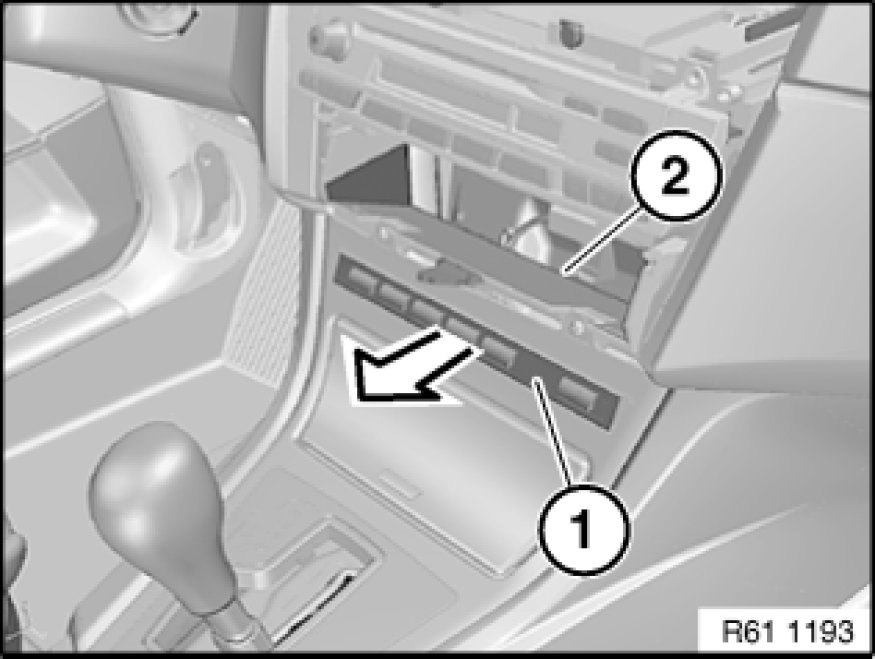

Removing and Installing/Replacing Switch Unit in Center Console
61 31 057 - Removing and installing/replacing switch unit in center console

Necessary preliminary tasks:
- Remove operator unit for heater/air conditioner Removing and Installing Control Panel for Heater - A/C System (Replacing, Automatic Air Conditioning)

Press out switch unit in storage tray (1) in direction of arrow.
Unlock and disconnect associated plug connection (2), remove switch unit in storage tray (1).